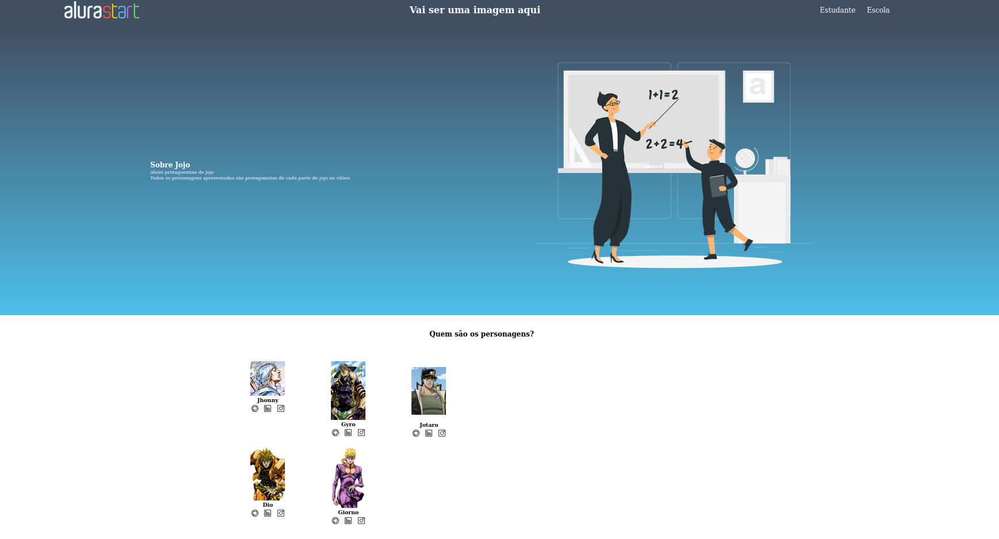
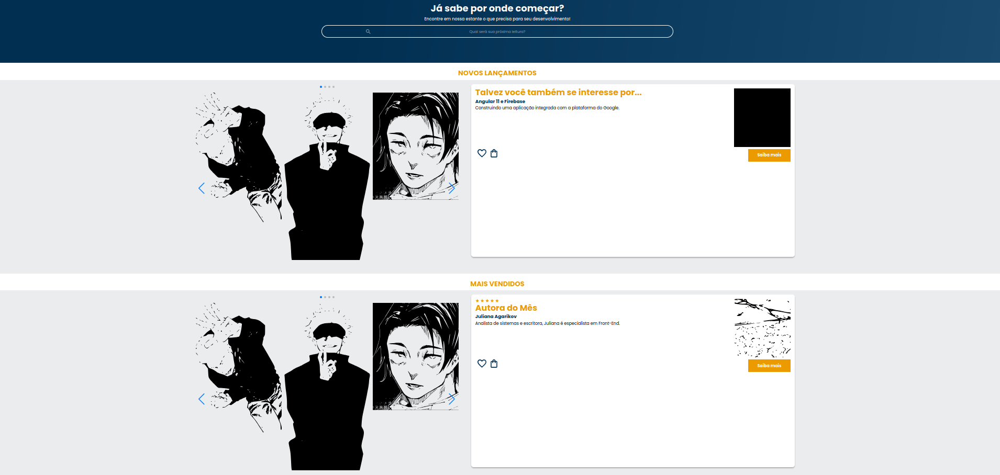
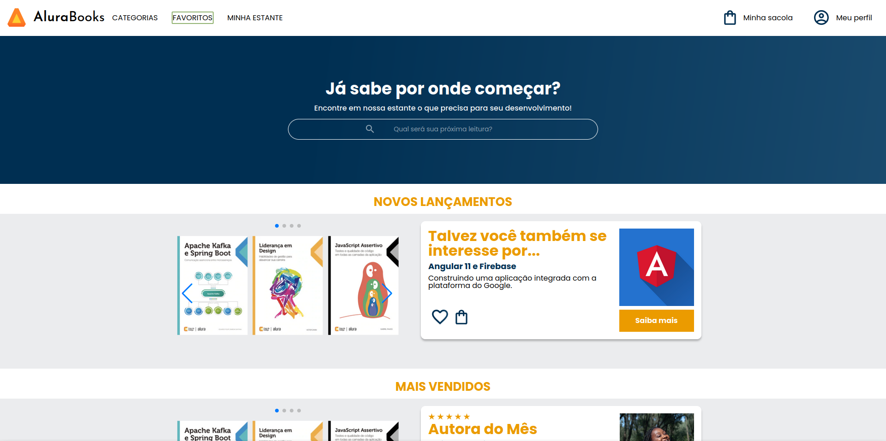

Meus projetos

Primeiro site criado por mim.
Este primeiro site foi proposto uma atividade para aprender o básico como adicionar imagens, colocar cor, editar fonte, e título.

Segundo site criado por mim.
Este projeto foi criado com o intuito de aprimorar as habilidades ja adquiridas no primeiro site, foi utilizado mais como exercício para aperfeiçoar as habilidades de programação

Projeto do primeiro site criado com base nas aulas do Alura
Este projeto foi utilizado para adquirir mais conhecimento sobre os códigos e abrangendo mais a linguagem de html e css